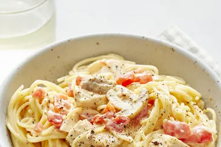

Quick and Easy Chicken Spaghetti

Description
This chicken spaghetti recipe is quick and easy to make, yet is hearty and delicious. It's a great way to use leftover chicken!
Easy taco skillet bake that uses only one pan. This recipe can be made for under $10!
Ingredients
- 1 (12 ounce) package angel hair pasta
- 2 cups chopped cooked chicken breast
- 1 (10.75 ounce) can condensed cream of chicken soup
- 1 (10 ounce) can diced tomatoes with green chile peppers
- ¾ (8 ounce) package processed cheese, cubed
- ½ (4 ounce) jar sliced mushrooms, drained
- salt and pepper to taste